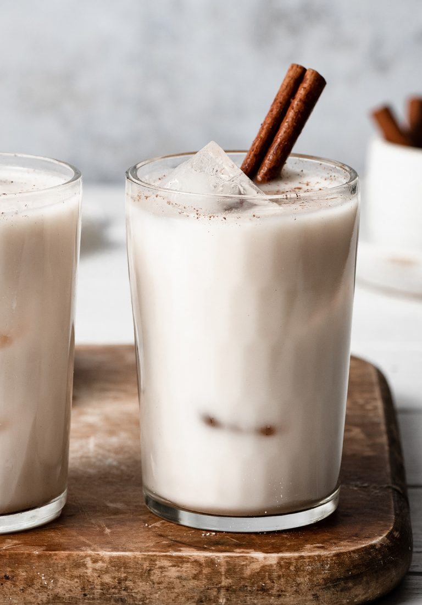

Horchata

Description
Amazingly refreshing homemade Horchata! This popular drink
is flavored with rice, cinnamon, vanilla and almonds and it's so easy
to make. Just blend everything in a blender, let it soak, then strain
and serve! Yields about 6 cups.
Ingredients
- 1 cup long grain rice
- 1/2 cup almonds
- 2 cinnamon sticks
- 4 cups cold water
- 1/2 cup sugar
- 1 tablespoon vanilla extract
- 2 cups whole milk
Steps
- Add rice, almonds and cinnamon sticks to a high speed blender.
Blend about 30 - 60 seconds on high speed or until finely
pulverized, stopping occasionally and shaking blender if mixture
sticks to the bottom.
- Pour in 2 cups water, sugar and vanilla. Blend an additional 30
seconds. If your blender can fit the additional liquid pour in
remaining 2 cups water, and milk, otherwise pour into a large
enough container to fit along with water and milk.
- Cover and chill 8 - 12 hours.
- Strain mixture through a fine mesh sieve into a pitcher.
Serve with ice if desired, garnishing each serving with ground
cinnamon or cinnamon sticks.
Home